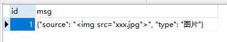
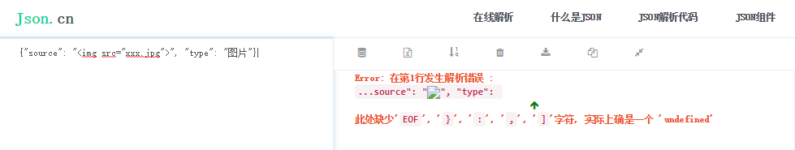
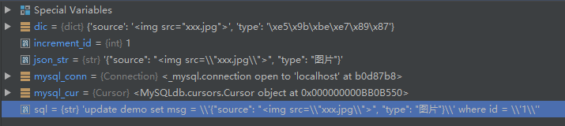
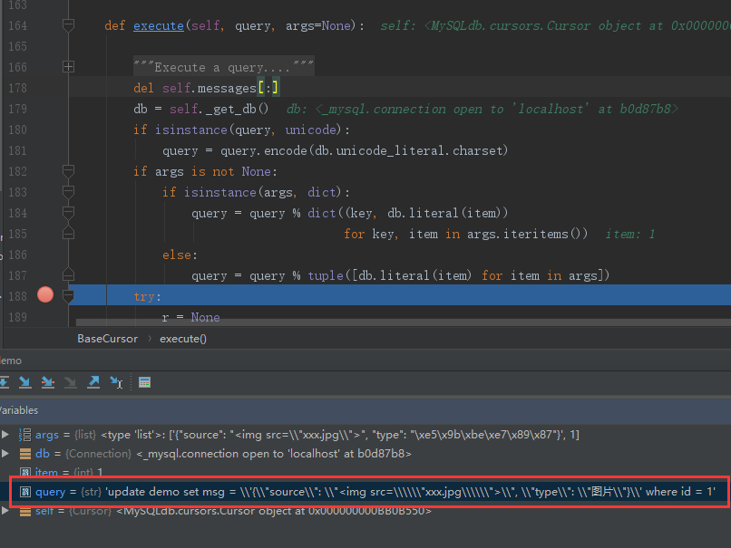

解决向MySQL中插入Json字符串无法正确解析的问题
环境依赖
Python 2.7
MySQL 5.7
MySQL-python 1.2.5
Pandas 0.18.1
在日常的数据处理中，免不了需要将一些序列化的结果存入到MySQL中。这里以插入JSON数据为例，讨论这种问题发生的原因和解决办法。现在的MySQL已经支持JSON数据格式了，在这里不做讨论；主要讨论如何保证存入到MySQL字段中的JsonString能被正确解析。
问题描述 1 2 3 4 5 6 7 8 9 10 11 12 13 14 15 import MySQLdbimport jsonmysql_conn = MySQLdb.connect(host='localhost' , user='root' , passwd='root' , db='test' , port=3306 , charset='utf8' ) mysql_cur = mysql_conn.cursor() increment_id = 1 dic = {"value" : "<img src=\"xxx.jpg\">" , "name" : "小明" } json_str = json.dumps(dic, ensure_ascii=False ) sql = "update demo set msg = '{0}' where id = '{1}'" .format(json_str, increment_id) mysql_cur.execute(sql) mysql_conn.commit() mysql_cur.close()
应用场景抽象如上所示，将一个字典经过经过Json序列化后作为一个表字段的值存入到Mysql中，按照如上的方式更新数据时，发现落库的JsonString反序列化失败；落库结果和反序列化结果分别如下所示：


原因分析 对于字符串中包含引号等其他特殊符号的处理思路在大多数编程语言中都是相通的：即就是通过转义符来保留所需要的特殊字符。Python中也不例外，如上所示，对于一个字典{"value": "<img src="xxx.jpg">", "name": "小明"}，要想在编译器里正确的表示它，就需要通过对转义包裹xxx.jps的两个双引号，不然会提示错误，所以它的正确写法为：{"value": "<img src=\"xxx.jpg\">", "name": "小明"}；将序列化后的String作为参数传入待执行的sql语句中，通过编辑器的debug模式查看的效果如下所示：

而这句sql经过编译器解析后传入到MySQL去执行的本质为：'update demo set msg = '{"source": "<img src="xxx.jpg">", "type": "图片"}' where id = '1'，因此落库的实际结果其实并不是目标字典对应的序列化结果，而是目标数据对应的字面字符串值。
解决方案 可以通过转义符替换、修改sql书写方式或通过DataFrame.to_sql()三种方式来解决。
方案一 转义符替换 通过上文可以了解到，是因为\\"xxx.jpg\\"的本质即就是"xxx.jpg"，所以数据库读到的也就是{"source": "<img src="xxx.jpg">", "type": "图片"}，从而导致插入的结果并不能被正确反序列化。可以通过简单粗暴的转义符替换方式来解决这个问题：json_str.replace('\\', '\\\\')，这样就保证最终的解析结果为\"xxx.jpg\"。
方案二 修改sql书写方式 1 2 3 4 5 6 7 8 9 10 11 12 13 14 15 16 17 18 19 20 21 22 23 24 25 26 27 28 29 30 31 32 33 34 def execute (self, query, args=None) : del self.messages[:] db = self._get_db() if isinstance(query, unicode): query = query.encode(db.unicode_literal.charset) if args is not None : if isinstance(args, dict): query = query % dict((key, db.literal(item)) for key, item in args.iteritems()) else : query = query % tuple([db.literal(item) for item in args]) try : r = None r = self._query(query) except TypeError, m: if m.args[0 ] in ("not enough arguments for format string" , "not all arguments converted" ): self.messages.append((ProgrammingError, m.args[0 ])) self.errorhandler(self, ProgrammingError, m.args[0 ]) else : self.messages.append((TypeError, m)) self.errorhandler(self, TypeError, m) except (SystemExit, KeyboardInterrupt): raise except : exc, value, tb = sys.exc_info() del tb self.messages.append((exc, value)) self.errorhandler(self, exc, value) self._executed = query if not self._defer_warnings: self._warning_check() return r
查看MySQL-python的execute源码(如上所示)可以发现，在传入待执行的sql语句的同时，还可以传入参数列表/字典；让MySQL-Python来帮我们进行sql语句的拼接和解析操作，修改上述样例的实现方式：
1 2 3 4 5 6 7 8 increment_id = 1 dic = {"value" : "<img src=\"xxx.jpg\">" , "name" : "小明" } json_str = json.dumps(dic, ensure_ascii=False ) sql = "update demo set msg = %s where id = %s" mysql_cur.execute(sql, [json_str, increment_id]) mysql_conn.commit() mysql_cur.close()
通过走读源码发现参数经过literal()方法将Python的对象转化为对应SQL数据的字符串格式；在编译器Debug模式下可以看到最终将\\"xxx.jpg\\"转化为\\\\\\"xxx.jpg\\\\\\"。至于为什么是六个反斜杠我自己也不太清楚；不过姑且可以这样理解：把literal方法的操作可以假定为有一次的序列化，因为给定的数据源是\\"，所以序列化的结果为应该为\\\\"，即就是四个反斜杠；因为\\"代表的即就是"，而期望落库的结果为\"，所以需要再添加两个反斜杠。这种解释不是那么准确和严谨，但是有利于帮助理解，若有了解底层机制和原理的，还请留言指教。

推荐使用
方案三 DataFrame.to_sql() 处理数据离不开Panda工具包；Pandas的DataFrame.to_sql()方法可以便捷有效的实现数据的插入需求；同样该方法也能有效的规避上述这种序列化结果错误的情况，因为DataFrame.to_sql()底层的实现逻辑类似于方案二，也是通过参数解析的方式来拼接sql语句，核心源码如下所示，同于不难发现，DataFrame.to_sql()只能支持insert操作，适用场景比较局限。对于有唯一索引的表，当待插入数据与数据表中有冲突时会报错，实际使用时需要格外注意。
1 2 3 4 5 6 7 8 9 10 11 12 13 14 15 16 def insert_statement (self) : names = list(map(text_type, self.frame.columns)) flv = self.pd_sql.flavor wld = _SQL_WILDCARD[flv] escape = _SQL_GET_IDENTIFIER[flv] if self.index is not None : [names.insert(0 , idx) for idx in self.index[::-1 ]] bracketed_names = [escape(column) for column in names] col_names = ',' .join(bracketed_names) wildcards = ',' .join([wld] * len(names)) insert_statement = 'INSERT INTO %s (%s) VALUES (%s)' % ( escape(self.name), col_names, wildcards) return insert_statement